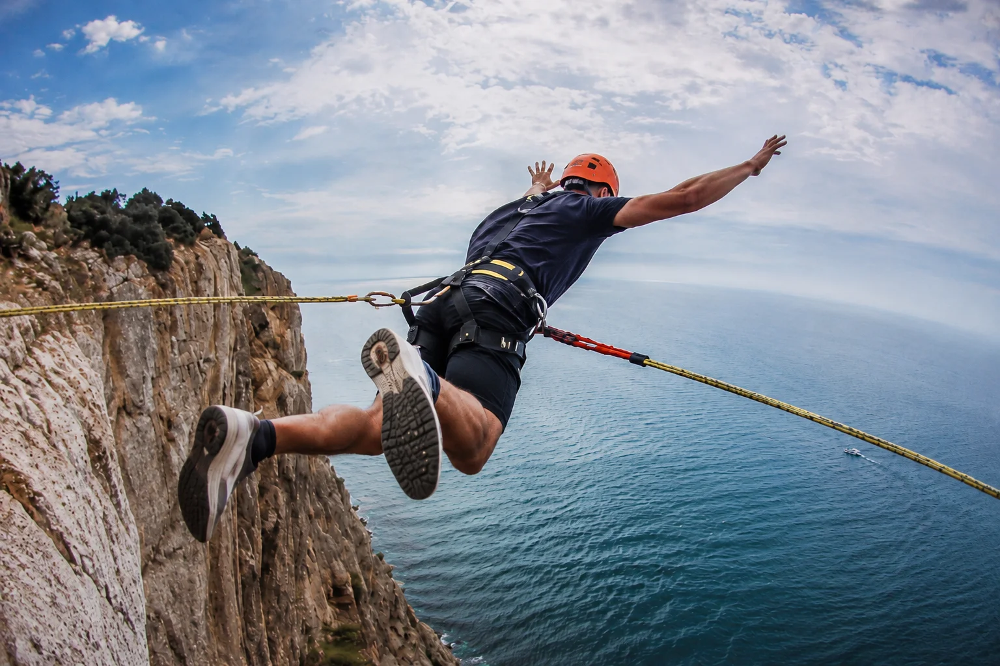
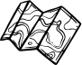
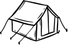

Приморье, которое остаётся с тобой
Воздух
становится
событием.
Демонстрация нового фона внутри знакомого интерфейса Вкрайности.
Перейти к секциямBACKGROUND / 01
Сайт сохраняет
свою систему
SafetySection
Безопасность
в поездках.
Ваша безопасность — наш приоритет

Безопасностьв поездкахУзнать больше

Формируем маршрут✓Отслеживаем погоду✓
Проверяем снаряжение✓
Готовимся к «бездорожью»✓

Ищем колышки от палатки✓Наполняем фляги водичкой✓
Home · SeasonToursSection
Туры
Вкрайности.
По этим параметрам маршрутов пока нет. Попробуйте изменить фильтры.

16 часовСредний уровень6 000 ₽
Гора Изюбриная (1433 м) — живописная вершина в Чугуевском районе Приморского края на пересечении хребтов Белки и Лугового. «Самая снежная» вершина известна своими сказочными заснеженными елями.
Выбрать датуЧто включено
ТрансферПитание и глинтвейнЛедоступы / кошкиГид-проводник


До встречи на краю карты